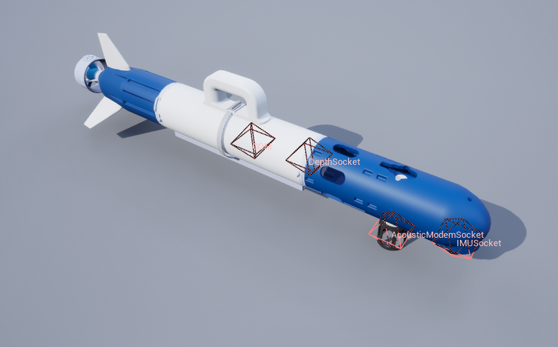
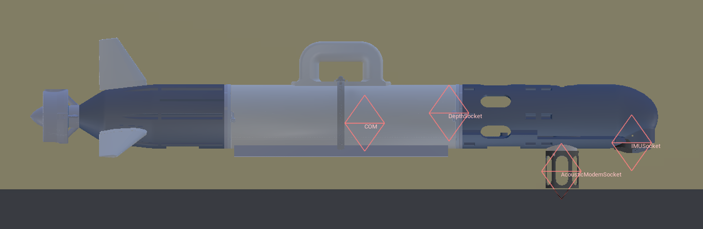
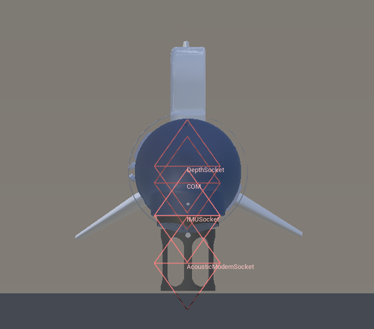
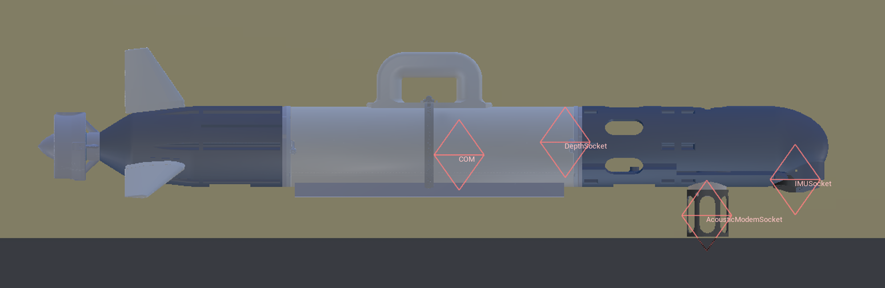
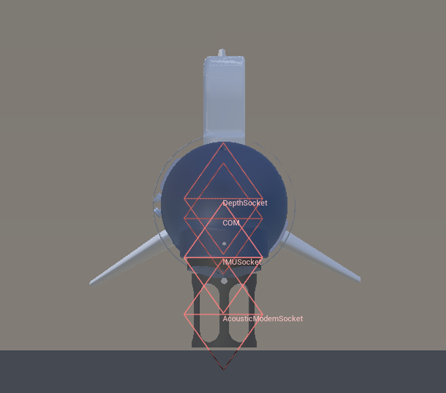

CougUV

Description
A small torpedo-style AUV. This is currently just a copy of the Torpedo AUV but with a different asset.
The asset has three fins, but the control scheme is set up for four fins. We have not corrected this becuase we primarily use this vehicle with Fossen-Based Dynamics.
See the CougUV.
Control Schemes
- AUV Fins (``0``)
Takes in a 5 length vector of four fin angles and a thruster value. The format is [Right Fin, Top Fin, Left Fin, Bottom Fin] Fins have a range of -45 to 45 degrees, and the thruster has a range of -100 to 100 (percent of max thrust).
- Custom Dynamics (``1``)
A 6-length floating point vector of linear and angular accelerations in the global frame. This is to be used for implementing custom dynamics. Besides collisions, all other forces and torques (including gravity, buoyancy, and damping) have been disabled in the simulator to allow for a clean slate for custom dynamics.
Note
Dynmics models from Thor Fossen are available for the CougUV to enable more realistic simulations. To use Fossen dynmics, use the Custom Dynamics control scheme, then create a Fossen vehicle controller and a Fossen dynamics manager. For details, see Fossen-Based Dynamics.
Sockets
All sockets have standard orientation unless stated otherwise. Standard orientation has the x-axis pointing towards the front of the vehicle, the y-axis pointing starboard, and the z-axis pointing upwards.
Socket Definitions
COMCenter of mass.DVLSocketLocation of the DVL, same location as IMUSocket, rotated 180 degrees on x-axis - x forward, z down, y left.IMUSocketLocation of the IMU, rotated 180 degrees on x-axis - x forward, z down, y left.DepthSocketLocation of the depth sensor.AcousticModemSocketLocation of the acoustic modem.Viewportwhere the robot is viewed from.
Socket Frames
{kind=link}
 



{kind=link}
{kind=link}